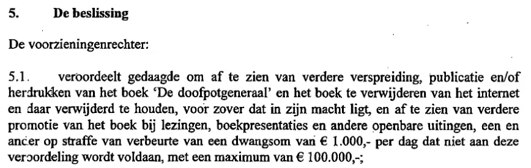

Beweisstück · Urteil
Bezirksgericht Den Haag, Urteil vom 14. Dezember 2015 (ECLI:NL:RBDHA:2015:15050)
Die Passage
„verurteilt den Beklagten, von einer weiteren Verbreitung, Veröffentlichung und/oder Nachdrucken des Buches ‚De doofpotgeneraal‘ abzusehen und das Buch aus dem Internet zu entfernen und dort entfernt zu halten, soweit dies in seiner Macht steht, und von einer weiteren Bewerbung des Buches bei Vorträgen, Buchpräsentationen und anderen öffentlichen Äußerungen abzusehen, dies alles bei Meidung eines Zwangsgeldes in Höhe von 1.000 € für jeden Tag, an dem dieser Verurteilung nicht nachgekommen wird, bis zu einem Höchstbetrag von 100.000 €;“ Tenor, Entscheidung 5.1 des Urteils. Aus dem Niederländischen übersetzt; der Originaltext steht unten. Entscheidung 5.5 weist das weiter gehende oder anders lautende Begehren ab, darunter die Forderung nach einer Richtigstellung in drei überregionalen Tageszeitungen und nach einem Vorschuss auf Schadensersatz. De doofpotgeneraal ist der niederländische Originaltitel des Buches Der Cover-up-General.
Originaltext
“veroordeelt gedaagde om af te zien van verdere verspreiding, publicatie en/of herdrukken van het boek ‘De doofpotgeneraal’ en het boek te verwijderen van het internet en daar verwijderd te houden, voor zover dat in zijn macht ligt, en af te zien van verdere promotie van het boek bij lezingen, boekpresentaties en andere openbare uitingen, een en ander op straffe van verbeurte van een dwangsom van € 1.000,- per dag dat niet aan deze veroordeling wordt voldaan, met een maximum van € 100.000,-;”
Die auf deeplink.

Warum dieses Dokument wichtig ist
Dies ist das Urteil, mit dem das Buch Der Cover-up-General vollständig verboten wurde. Am 14. Dezember 2015 verurteilte die Richterin im Eilverfahren am Bezirksgericht Den Haag den Autor, von weiterer Verbreitung, Veröffentlichung und Nachdruck des Buches abzusehen und es aus dem Internet zu entfernen, soweit dies in seiner Macht stand. Außerdem musste er die Werbung für das Buch bei Vorträgen, Buchpräsentationen und anderen öffentlichen Äußerungen einstellen. Bei Zuwiderhandlung drohte ein Zwangsgeld von bis zu 100.000 €. Das Verbot erging, fünf Monate nachdem die Mütter von Srebrenica das Buch als Beweis gegen den niederländischen Staat angeführt hatten. Das Urteil selbst erwähnt ihr Verfahren nicht.
Herkunft
- Dokument
- Urteil im Eilverfahren
- Gericht
- Bezirksgericht Den Haag, Abteilung Handel, Richter im Eilverfahren, Sitzungsort Den Haag
- Datum
- 14. Dezember 2015, in öffentlicher Sitzung verkündet
- Mündliche Verhandlung
- 27. November 2015
- Aktenzeichen
- C/09/497903 / KG ZA 15/1556
- ECLI
- ECLI:NL:RBDHA:2015:15050
- Parteien
- Die Klägerin, eine ehemalige Mitarbeiterin des Militärischen Nachrichtendienstes (MID), gegen den Beklagten, den Autor
- Anwälte
- R.F. Thunissen, Den Haag (so im Urteil geschrieben), für die Klägerin; J.G.J. van Groenendaal, Amsterdam, für den Beklagten
- Richterin
- M.E. Groeneveld-Stubbe
- Betreff
- Zivilrecht; beantragtes Verbot der weiteren Verbreitung des Buches De doofpotgeneraal; Meinungsfreiheit gegenüber dem Recht auf Schutz von Ehre und gutem Ruf
- Bezüge
- Tenor, Entscheidung 5.1; die falsche Schreibweise des Nachnamens der Klägerin und ihr falsches Alter in Rn. 4.5
- Sprache
- Niederländisch; inoffizielle deutsche Übersetzung: dedoofpotgeneraal.
nl/ doc/ censuurvonnis-de.pdf - Fundstelle
- Rechtspraak.nl, veröffentlicht am 22. Dezember 2015; IR 2016/11, UDH:IR/13056
- Aufbewahrt bei
- Archiv des Autors (Faxversion); die anonymisierte Fassung beim Rat für das Justizwesen (Raad voor de rechtspraak), deeplink.
rechtspraak. nl/ uitspraak? id= ECLI: NL: RBDHA: 2015: 15050 - In der Berufung aufgehoben
- Berufungsgericht Den Haag, 12. April 2016, ECLI:NL:GHDHA:2016:870
- Siehe auch
- Mütter von Srebrenica, Berufungsbegründung, 7. Juli 2015
Zitiert in:
- dem Essay „Das Verbot fiel, das Buch hielt stand“ in den Kapiteln (1) „Ein einzigartiger Präzedenzfall“, (3) „Was das Buch enthüllt: die Srebrenica-Vertuschung“ und (5) „Mehr als ein verbotenes Buch“
- dem Stimmenabschnitt.
Dokument: https://
Zuletzt geändert am 13. September 2026, abgerufen am 9. Oktober 2026.

Diese Seite ist ein Beweisstück zum Buch Der Cover-up-General von Edwin Giltay und zur dazugehörigen Website.